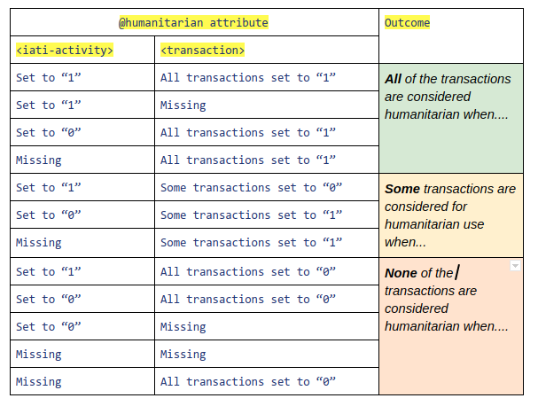
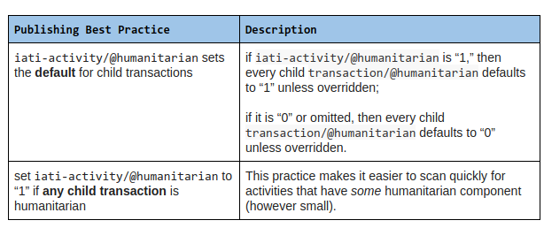
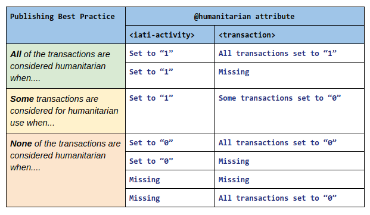

Sorry @bill_anderson - I get confused by this (it could well be me) – as I understand a boolean / flag to be Yes/No or True/False or 1/0 in terms of humanitarian. Bringing in “0 = development” seems like a … codelist !
1 Like
“0” = not humanitarian
No, splitting things up at the transaction level doesn’t work.
If you go back to the main thread on this topic Help develop IATI’s humanitarian reporting guidance (sorry, I posted the wrong one above), you will see that we flagged this problem waaaaayyyyy back when.
I asked repeatedly for this DRAFT guidance to be corrected, precisely to avoid leading people down the wrong path, but nothing happened. It’s a bit frustrating, honestly.
Why doesn’t this work? No one objected to a flag at transaction level when it was introduced into the standard.
For the reasons explained in the other thread.
It’s fine to have the possibility to do it, but it should not be presented as the preferred way to do it.
I think it is a really bad idea to split a single project into artificial components and a bad precedent to set. Project IDs will no longer be consistent between published data and source systems, making reconciliation between different systems (e.g. IATI and local AIMS) more difficult. Activity-based reporting is an advantage of IATI over the CRS’s transaction-based reporting.
We have seen this a lot with donors breaking projects into multiple activities for each sector and country, where it significantly increases the amount of noise in the data. See for example Swedish projects here (Sweden is in the process of correcting this). The project beginning SE-0-SE-6-5204006501- is broken into three activities (one for each sector code 72010, 72040, 72050) and many more activities when you consider the other countries this project is active in.
USAID recently corrected the same issue in their data and it made their data far more useful and usable.
1 Like
Thanks for this Mark. Will be useful in an (unrelated) discussion regarding the “right” amount of project disaggregation by country and sector.
Yes, I agree. Should we start a new thread?
Sure. This way we can keep this one focused on correcting the humanitarian guidance as soon as possible.
1 Like
Its been a while but work has now restarted on updating the IATI humanitarian guidelines. As a result of the above and other consultations the following scenarios for use (or not) of the iati-activity/@humanitarian and iati-activity/transaction/@humanitarian attributes have been identified:
- An activity has no humanitarian component (eg development only)
-
Neither the iati-activity/@humanitarian attribute or iati-activity/transaction/@humanitarian are required and should NOT be included
-
NB there have been some discussions that in this case the iati-activity/@humanitarian attribute should be present but set to ‘0’. Eg iati-activity humanitarian=“0”
-
However, general publishing best practice recommends that unnecessary elements and/or attributes should not be included in an IATI XML file in order to reduce file ‘bloat’ and subsequent file processing overhead & times etc.
- All aspects of an activity are humanitarian related
-
The iati-activity/@humanitarian attribute is required
iati-activity humanitarian=“1” -
The iati-activity/transaction/@humanitarian attribute is NOT required
- Some aspects of an activity are humanitarian related but the activity cannot be split at the transaction level to specifically indicate its humanitarian and other components
-
The iati-activity/@humanitarian attribute is required:
iati-activity humanitarian=“1” -
NB Humanitarian and other related DAC sector codes with a percentage split should also be present in this situation
-
The iati-activity/transaction/@humanitarian attribute is NOT required
- Some aspects of an activity are humanitarian related and the activity can be split at the transaction level to specifically indicate its humanitarian and other components
-
The iati-activity/@humanitarian attribute is NOT required
-
The iati-activity/transaction/@humanitarian attribute is required and should be used on ALL transactions. Eg
-
If a transaction is humanitarian related
transaction ref=“1234” humanitarian=“1” -
If a transaction is NOT humanitarian related
transaction ref=“1234” humanitarian=“0”
NB One issue that has been raised in relation to this option is that it does mean that from a data processing perspective there is a big overhead of having to check both the activity and at least one transaction of every published activity to identify if an activity is ‘humanitarian’ or ‘not’.It would therefore be interesting to get the view of other developers on this?
1 Like
Thanks for sharing that, Wendy. My proposal is slightly simpler:
-
iati-activity/@humanitariansets the default for child transactions: ifiati-activity/@humanitarianis “1,” then every childtransaction/@humanitariandefaults to “1” unless overridden; if it is “0” or omitted, then every childtransaction/@humanitariandefaults to “0” unless overridden. -
recommended best practice is to set
iati-activity/@humanitarianto “1” if any child transaction is humanitarian: while not strictly required for data processing, this practice makes it easier to scan quickly for activities that have some humanitarian component (however small).
This proposal follows the rule of least surprise by conforming closely to the existing model of attributes and elements at the iati_activity level including @xml:lang, @default-currency, default-flow-type, default-finance-type, default-aid-type, and default-tied status, all of which set default values that individual child elements (mostly, transaction) can override on a case-by-case basis.
3 Likes
Thanks @Wendy. Please can you indicate when these guidelines would be updated, and which document we should be following. There’s a document online, but that doesn’t provide any indication of how current it is, nor include some of the information above
Hi all
In response to this, I’ve formatted this table to illustrate the permutations one could see with the humanitarian flag at activity and/or transaction level:

I also subscribe to the proposal from @David_Megginson, but also want to flag (!) how we can see a wide range of uses - all of which are valid (in terms of schema validation, at least).
With the FTS IATI pilot we will discuss this - so just raising a humanitarian-flag for @ximboden @Wendy @stolk @pelleaardema @Herman @DanielMackenzie @rbesseling @r_clements
1 Like
Thanks, Steven – that’s a great table for organisations consuming IATI data. For organisations producing IATI data (as we discussed after you posted this), we would want to discourage some of these combinations, especially given the standard’s guidance that “1” should be set at the activity level if one or more transactions are humanitarian.
2 Likes
Thanks @David_Megginson
OK - if we agree that there are many combinations that anyone trying to process IATI data might have to consider, we can now look at (and you’ve said this already!) what we would consider as best practice amongst publishers:
(NB: I’ve a google doc with this, if anyone finds it easier to comment there)
If we consider these two publishing conditions to be acceptable:

We then have a reduced number of best practice combinations of the humanitarian flag:

Is this what we want ?
Moving on, it seems there’s two main actions:
- Revise the description of the humanitarian flag (as originally discussed) - consider this as bug fix of the standard
- Publish this Best Practice guidance for the community, and link to it from the documentation
I hope this gets us to a satisfactory place! It seems a real lesson in terms of introducing a relatively simple attribute to the standard, but then learning from the reality of implementation.
@stevieflow I am a little unsure what the goal is here - I think your intention is to remove the “or partially” from the description “indicate that this activity relates entirely or partially to humanitarian aid”?
I am not sure that is a good idea. It seems as though it would rule out @Wendy’s point 3 (quoted below). I have argued above that this is important because:
a) a single project shouldn’t be split into artificial components, because it makes reconciliation of project units more difficult and
b) you may know that an activity is partially related to humanitarian aid, but not the precise amount, and your accounting system may not (I guess, often will not) be able to tell you precise amounts at the transaction level. I think the use of humanitarian DAC codes would be a better way of roughly stating the amount of aid that is humanitarian in nature.
Thanks. No - the intention is along the lines of
Have I made it even more unclear? Oh no!
1 Like
Have we considered changing this to non-boolean to make it simpler?
Hi @matmaxgeds
Understood. I think this was part of my earlier confusion:
But - It seems if we sharpen the description:
… then that might help…